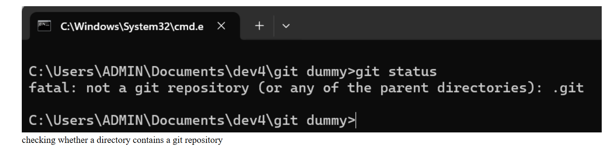

Set up your development environment and create all the necessary files and folders.
Start your blog by talking about what is git, talk about git being a version control system, describe what a version control system is and list any other version control systems like git but emphasize that in this blog you will be going through Git and GitHub.
Go through checking whether Git is installed on your reader's machine or not, provide directions on how to download and install Git if it is not availabe on your reader's machine. If you use any command here, make sure to include a screenshot of the command on the page alongside a caption as shown in the example below.
Go through how configuration of username and email address is done, take a screenshot of the commands and make sure to include them in the blog alongside a caption.
Describe to your reader what a Git repository is and how to initialize a git repository (be sure to include a screenshot of the command used alongside a caption in the blog).
Go through the process of adding files to the staging area, explain to your reader what a staging area is, also go through the difference(s) between tracked and untracked files. Make sure to include a screenshot of any command(s) used in this stage.
Go through how to commit changes to a git repository. Educate your readers on how to write good commit messages and teach your readers how to view past commits and how to go back to a particular commit. Make sure you include a screenshot of any commands used.
Describe to your reader what branches in git are and why they are important.
Go through how to merge branches in git, explain to your reader what a merge conflict is and how to resolve it. Make sure to include a screenshot of any command(s) used.
Show your readers how they can view all branches present in a repository and how they can know which branch is the active branch. Include a screenshot of any command(s) used.
Go through how to push changes to a remote repository, make sure to include a screenshot of any command(s) used.
Show your users how to merge branches using a git command. Include a screenshot of any command(s) used.
Go through how to delete a branch. Include a screenshot of any command(s) used.
Recommend next steps for your users, e.g, the next concept in Git they could learn, the next tool related to Git e.g GitHub e.t.c
Deploy your page to Vercel or GitHub pages or any hosting platform of your choice and submit the link
That's it.